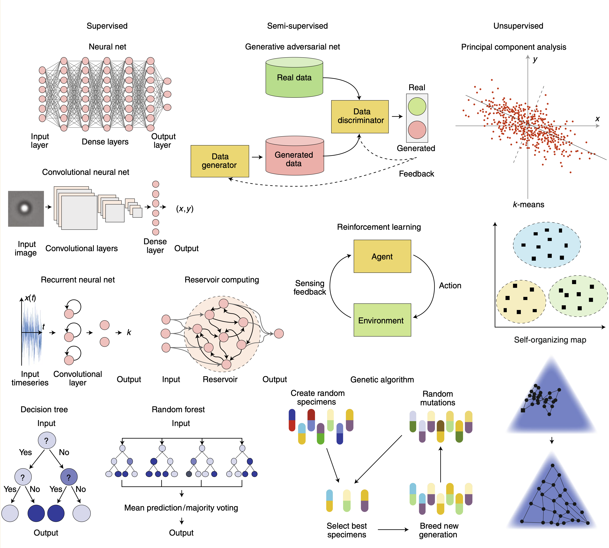
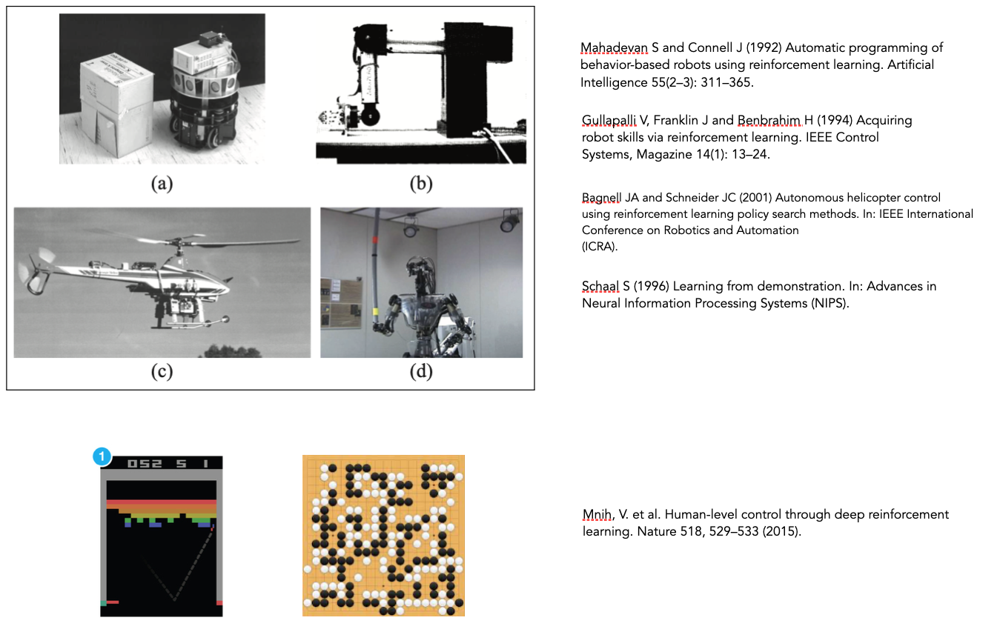
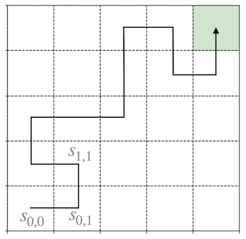

Machine Learning and Neural Networks
We are close to the end of the course and covered different applications of Python to physical problems. The course is not intended to teach the physics, but exercise the application of Python. One field, which is increasingly important also in physics is the field of machine learning. Machine learning is the summarizing term for a number of computational procedures to extract useful information from data. We would like to spend the rest of the course to introduce you into a tiny part of machine learning. We will do that in a way that you calculate as much as possible in pure Python without any additional packages.
Overview
Machine learning has its origins long time ago and many of the currently very popular approaches have been developed in the past century. Two things have been stimmulating the current hype of machine learning techniques. One is the computational power that is available already at the level of your smartphone. The second one is the availability of data. Machine learning is divided into different areas, which are denotes as
- supervised learning: telling the system what is right or wrong
- semi-supervised learning: having only sparse information on what is right or wrong
- unsupervised learning: let the system figure out what is right or wrong
The graphics below gives a small summary. In our course, we cannot cover all methods. We will focus on Reinforcement Learning and Neural Networks just to show you, how things could look in Python.

Image taken from F. Cichos et al. Nature Machine Intelligence (2020).
Reinforcement Learning
Reinforcement learning is learning what to do—how to map situations to actions—so as to maximize a numerical reward signal. The learner or agent is not told which actions to take, as in most forms of machine learning, but instead must discover which actions yield the most reward by trying them. In the most interesting and challenging cases, actions may affect not only the immediate reward but also the next situation and, through that, all subsequent rewards. These two characteristics—trial-and-error search and delayed reward—are the two most important distinguishing features of reinforcement learning.
It has been around since the 1950s but gained momentum only in 2013 with the demonstrations of DeepMind on how to learn play Atari games like pong. The graphic below shows some of its applications in the field of robotics and gaming.

Reinforcement learning offers particularly exciting applications in areas such as:
- Optimizing experimental design parameters
- Controlling quantum systems and quantum state preparation
- Finding energy-efficient paths in phase space
- Optimizing molecular dynamics simulations
- Discovering new materials with desired properties
The mathematical framework of reinforcement learning also shares conceptual connections with statistical physics, particularly in how systems evolve toward equilibrium states that maximize certain potentials. The exploration-exploitation tradeoff in RL has parallels to thermodynamic concepts like entropy maximization under constraints.
Markov Decision Process
The key element of reinforcement learning is the so-called Markov Decision Process. The Markov decision process (MDP) denotes a formalism of planning actions in the face of uncertainty. A MDP consist formally of
- \(S\): a set of accessible states in the world
- \(D\): an initial distribution to be in a state
- \(P_{sa}\): transition probability between states
- \(A\): A set of possible actions to take in each state
- \(\gamma\): the discount factor, which is a number between 0 and 1
- \(R\): A reward function
It’s worth noting the connection to concepts you’re likely familiar with:
- State space \(S\) is analogous to phase space in classical mechanics
- Transition probabilities \(P_{sa}\) resemble stochastic processes like the Fokker-Planck equation
- The Markov property (future states depend only on the current state, not history) is similar to memoryless processes in statistical mechanics
- The reward function \(R\) plays a role similar to Hamiltonians or Lagrangians in that the system “seeks” to optimize it
We begin in an initial state \(s_{i,j}\) drawn from the distribution \(D\). At each time step \(t\), we then have to pick an action, for example \(a_1(t)\) , as a result of which our state transitions to some state \(s_{i,j+1}\). The states do not nessecarily correspond to spatial positions, however, as we talk about the gridworld later we may use this example to understand the procedures.

By repeatedly picking actions, we traverse some sequence of states
\[ s_{0,0}\rightarrow s_{0,1}\rightarrow s_{1,1}+\ldots \]
Our total reward is then the sum of discounted rewards along this sequence of states
\[ R(s_{0,0})+\gamma R(s_{0,1})+ \gamma^2 R(s_{1,1})+ \ldots \]
Here, the discount factor \(\gamma\), which is typically strictly less than one, causes rewards obtained immediately to be more valuable than those obtained in the future.
In reinforcement learning, our goal is to find a way of choosing actions \(a_0\),\(a_1, \ldots\) over time, so as to maximize the expected value of the rewards. The sequence of actions that realizes the maximum reward is called the optimal policy \(\pi^{*}\). A sequence of actions in general is called a policy \(\pi\).
This optimization can be viewed as analogous to the principle of least action in classical mechanics, where a system evolves along paths that minimize the action integral. The key difference is that in RL, we maximize rewards rather than minimize action.
Methods or RL
There are different methods available to find the optimal policy. If we know the transition probabilities \(P_{sa}\) the methods are called model-based algorithms. The so-called value interation procedure would be one of those methods, which we, however, do not consider.
If we don’t know the transition probabilities, then its model-free RL. We will have a look at one of those mode-free algorithms, which is Q‐learning.
For physics applications, common reinforcement learning methods include:
- Deep Q-Networks (DQN): Extensions of Q-learning using neural networks
- Policy Gradient methods: Directly optimizing the policy rather than value functions
- Actor-Critic methods: Combining value function approximation with policy optimization
- Monte Carlo Tree Search: Used notably in AlphaGo and similar systems
In Q-learning, the value of an action in a state is measured by its Q-value. The expectation value \(E\) of the rewards with and initial state and action for a given policy is the Q-function or Q-value.
\[ Q^{\pi}(s,a)=E[R(s_{0},a_{0})+\gamma R(s_{1},a_{1})+ \gamma^2 R(s_{2},a_{2})+ \ldots | s_{0}=s,a_{0}=a,a_{t}=\pi(s_{t})] \]
This sounds complicated but is in principle easy. There is a Q-value for all actions of each state. Thus if we have 4 actions an 25 states, we have to store in total 100 Q-values.
For the optimal sequence of actions - for the best way to go - this Q value becomes a maximum.
\[ Q^{*}(s,a)=\max_{\pi}Q^{\pi}(s,a) \]
The policy which gives the sequence of actions to be carried out to get the maximum reward is then calculated by
\[ \pi^{*}(s)=\arg\max_{a}Q^{*}(s,a) \]
The Q-learning algorithm is now an iterative procedure of updating the Q-value of each state and action which converges to the optimal policy \(\pi^{*}\). It is given by
\[ Q_{t+\Delta t}(s,a) = Q_t(s,a) + \alpha\big[R(s) + \gamma \max_{a'}Q_t(s',a')-Q_t(s,a)\big] \]
From a physics perspective, this update rule resembles a relaxation method for finding equilibrium states. The term in brackets can be interpreted as a “force” that drives the Q-values toward their optimal values, with α controlling the rate of convergence, similar to a damping constant in physics. The Bellman equation, which underpins this update rule, is also a form of dynamic programming that shares mathematical similarities with the Hamilton-Jacobi-Bellman equation in control theory.
This states, that the current Q-value of the current state \(s\) and the taken action \(a\) for the next step is calculated from its current value \(Q_t(s,a)\) plus an update value. This update value is calculated by multiplying the so-called learing rate \(\alpha\) with the reward \(R\) obtained when taking the action plus a discounted value (discounted by \(\gamma\)) when taking the best action in the next state \(\gamma \max_{a'}Q_t(s',a')\). This is the procedure we would like to explore in a small Python program, which is not too difficult.
Where to go from here
If you want to know more about Reinforcement Learning, have a look at the book of Sutton and Barto.